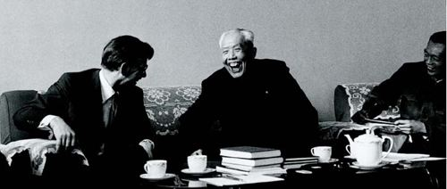
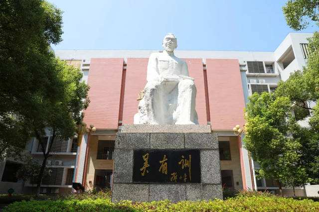
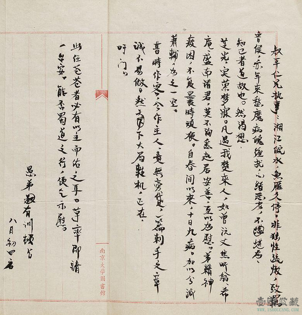

·Introduction
Wu Youxun's photo
Wu Youxun (April 26, 1897 - November 30, 1977), courtesy name Zhengzhi, was a physicist and educator from Gao'an, Jiangxi Province.
He was one of the pioneers and founders of modern Chinese physics research and also Known as the "founding father" of Chinese physics research.
In June 1920, Wu Youxun graduated from the Department of Mathematics, Physics and Chemistry of Nanjing Higher Normal School;
In 1925, he received a doctorate from the University of Chicago, and later served as an assistant and lecturer in the physics laboratory of the school, under the tutelage of Professor Compton;
In 1945 In October, he served as the president of the Central University; in 1948, he was elected as an academician of the Academia Sinica; in December 1950, he was appointed as the vice president of the Chinese Academy of Sciences;
in 1955, he was elected as a member of the Chinese Academy of Sciences.
Wu Youxun's contribution is mainly reflected in the research on X-ray, especially on scattering and absorption.
In the 1920s, he made contributions to the establishment and recognition of the Compton effect with systematic, exquisite experiments and incisive theoretical analysis in X-ray scattering research;
Theoretical research has creatively developed the general theory of X-ray scattering by polyatomic gases. He has contributed to the cultivation of Chinese physics talents.
Scholars such as Qian Sanqiang, Qian Weichang, Yang Zhenning, Deng Jiaxian, and Li Zhengdao were all his students.
·Biography

On April 26, 1897, Wu Youxun was born in a small village in Shixi Wu Village, Heling Township, Gao'an City, Jiangxi Province.
In 1912, he entered Ruizhou Middle School in Gao'an County, and then merged with the school into Nanchang No. 2 Middle School in Jiangxi Province.
In 1923, physicist A.H. Compton came to teach at the University of Chicago,
and Wu Youxun became his graduate student, working with Prof. Compton on X-ray scattering spectroscopy.
In August 1927, he was appointed associate professor and head of the Department of Physics, Faculty of Science, National Fourth Sun Yat-sen University.
In 1929, Wu Youxun established China's first modern physics laboratory at Tsinghua University to conduct research on domestic X-ray problems in China.
In 1948, he made short-term visits to Harvard University and Massachusetts Institute of Technology in the United States.
In January 1950, he attended the Modern Physics Symposium held by the Research Project Bureau of the Academy of Sciences to discuss and
participate in the adjustment and establishment of the relevant institutions of the Academy of Sciences' physical science
In 1977, Wu Youxun put forward many suggestions in preparation for the convening of the National Science Conference, and reviewed China's natural science development plan.
·Thoughts

Wu Youxun's important contribution to modern physics is mainly to comprehensively verify the Compton effect. Compton's original paper dealt with only one type of scattering material
, and although clear data had been obtained, it was ultimately limited to a specific condition.
In order to prove the universality of this effect, Wu Youxun, under the guidance of Compton,
made X-ray scattering curves of 7 kinds of substances, proving that as long as the scattering angle is the same,
the scattering effect of different substances is the same,
and the effect of changing line and constant line is the same.
SO deviation has nothing to do with material composition.
·Works

Note on absorption measurements of the x－rays rerlected from a calcite crystal ．
The wave－length of molybdenum Ka rayswhen scattered by light elements
The Compton effect
Intensity of total scattering of x－rays by monatomic gases
·Reference
Wu Youxun - BaiduWu Youxun - Wikipedia